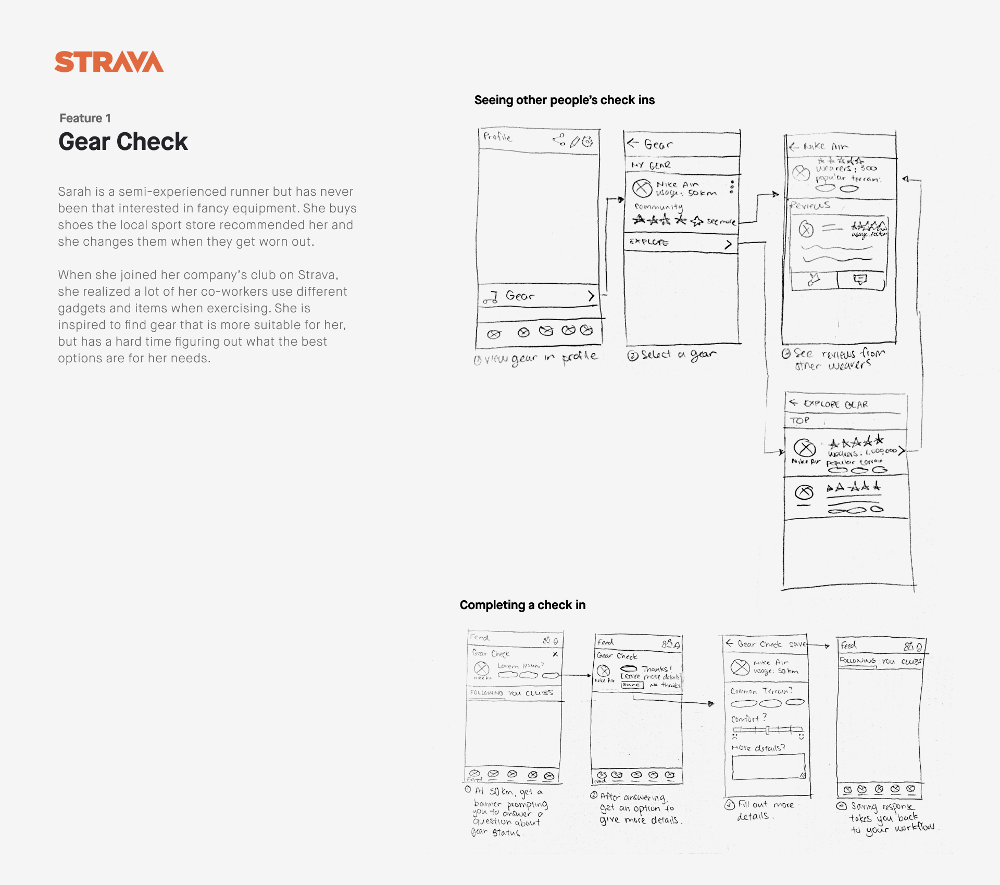

Team Challenges, a feature design proposal for Strava Android
Team Challenges allow users to motivate each other in reaching a common exercise goal. Users can create custom teams, see activity from their teammates, and send encouragement to help motivate each other.
Role
- Sketching wireflows and translating them into high-fidelity mockups
- Analysis of target audience and the app's existing UI patterns
- Planning and conducting user interviews
- Facilitating rapid ideation exercises

Project Brief / App Teardown
Tasked with creating a new feature for the Strava exercise app in three weeks, I worked with two other designers to conduct an intensive teardown of the app's existing features and interactions. This allowed us to quickly become familiar with the app's interface and interaction patterns, as well as their target audience.
As a social network for athletes, based on its core feature of recording exercise routes on a map, Strava's primary target audience are runners and cyclists. The emphasis on social features (events, friends feed) shows the app is focused on athletes of casual to intermediate skill level rather than professionals.
User Research Themes
Using a mix of user interviews and reading exercise forums, we were able to get a better sense of our target demographic's approach to exercising:
- Some athletes are motivated by knowing and seeing other people participating in the same activities, and through social feedback such as likes and comment on their activities.
- Many athletes want to keep track of their personal progress. Some share their progress with their friends to receive social motivation, while others track it for personal motivation.
- Beginner and intermediate athletes find it difficult to find reputable information about gear. When looking through multiple forums about running and Strava, we found that many people were talking about gear online and asking for recomendations.
Personas
We also did some research into Strava in order to understand the company's mission and motivations, which helped us put ourselves into the shoes of the company and understand what features might make sense from their position. Using this info and the user research info, we crafted two user personas (one target, one anti-persona) and one stakeholder persona. I worked on target and stakeholder personas, seen below.

Ideation and Initial Sketches
My team and I conducted a few rounds of sketch ideation and assessed them using a modified "How Wow Now" matrix, resulting in three initial proposals that spanned a variety of user needs while retaining feasibility for implementation.

I drew up sketch wireframes for two of the proposals, checking in with my teammates regularly to stay on the same page about the visualization of our idea.
Gear Check
A community-based gear check-in review system for athletic gear to help beginners pick out the right athletic gear for their needs.
Team Challenges
A version of the existing Strava individual challenges, that allows users to create teams to tackle challenges together.

We moved forward with Team Challenges for two main reasons: one, it was the feature that aligned the most with the company's goals of creating a robust social network for athletes and two, our other proposals (including Gear Check) potentially leaned too far into the realm of e-commerce, which would stray from the app's core purpose.
Fitting Into Strava's Design System
Our earlier analysis of Strava's existing interface came in handy as I worked with one teammate on translating my earlier sketches into high-fidelity mockups. We were careful to maintain consistency with the interaction and visual design patterns we observed so that our feature could live comfortably in Strava's existing design system.

Final Design
User Scenario
Sarah has accepted three different challenges in the past month, but has difficulty finding the motivation to complete them since she’s always tired after work.
After chatting with two coworkers, she found that both of them have the same problem and suggested doing a team challenge together to motivate each other. Sarah opens up Strava to find a challenge and create a team.
Creating a Team
Sarah starts by finding a team challenge on the Explore Challenges page. She creates a team with her coworkers, adding them based on their athletic proficiencies, and sends out the invite.

Team Challenge Feed
She can track team progress and activities in a new Team section in her Feed. She'll be notified when her teammates are active.

Sending Cheers
Sarah can see when her teammates are active and send live encouragement. Her teammate will receive visual and audio sounds of cheers to keep them motivated while active.
Considerations for Implementation
Though we weren't actually required to implement our design, we designed with implementation in mind. Components of the design are easily scaled and modified based on desired user experience: types of activities in challenge, number of team members, cheers UI, etc. And because we leveraged mostly existing interaction and UI patterns, this require less resources such as manpower and cost to create the feature.